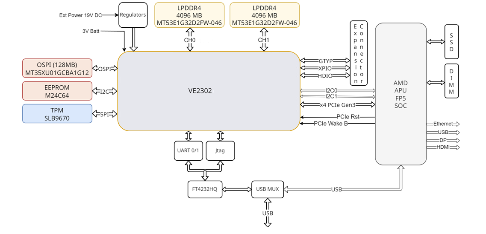

AMR RAVE - Hierarchy Overview¶
For common Versal architecture concepts, see Common Hierarchy
This document describes the RAVE platform-specific hierarchy and system architecture.
Introduction¶
The RAVE platform architecture combines an on-board Ryzen processor with a Versal VE2302 FPGA device in a Mini-ITX form factor.

Note: Image shows RAVE system architecture with VE2302, PL-based PCIe/XDMA, LPDDR4 memory, Ryzen connection, and expansion I/O. The design integrates PCIe connectivity between the processors, LPDDR4 memory for the Versal device, and extensive peripheral integration for standalone embedded operation.
The VE2302 implements a minimal base design in programmable logic with PCIe and XDMA IP blocks connecting to the on-board Ryzen through GTYP transceivers. The architecture supports expansion through a 160-pin Samtec connector enabling application-specific daughtercards for networking, vision, and custom I/O requirements.
System Architecture¶
The RAVE platform consists of two primary processing elements operating in a hybrid configuration. The Ryzen processor provides x86 compute capabilities and hosts the operating system. The Versal VE2302 device provides FPGA acceleration and programmable I/O connectivity.
The two processors communicate through a PCIe Gen3 x4 interface implemented using GT transceivers on the Versal side. The PCIe Versal IP and XDMA PL IP in the VE2302 handle the PCIe protocol and DMA operations, consuming programmable logic resources.
The Ryzen processor connects to system DDR memory through its integrated memory controller, while the VE2302 accesses its dedicated LPDDR4 memory (8-16 GB depending on variant) through the Versal integrated DDRMC. This dual-memory architecture allows each processor to operate independently while sharing data through PCIe DMA transfers.
Note: For processor model and memory capacity by variant, see the Sapphire RAVE1 EDGE+.
Versal VE2302 Block Architecture¶
CIPS Configuration¶
The Control, Interfaces, and Processing System (CIPS) configures the VE2302 hard blocks including the RPU (Realtime Processing Unit), PMC (Platform Management Controller), and integrated peripherals. The VE2302 does not include a CPM block, so PCIe functionality resides in programmable logic rather than hardened silicon.
The RPU runs firmware for device management, board control, and communication coordination. The two Arm Cortex-R5F processors execute firmware from LPDDR4 memory and communicate with the host through the software GCQ (General Command Queue) mechanism using shared memory regions.
The PMC manages device boot from OSPI flash, LPDDR4 initialization, and power management functions. The PMC loads the boot PDI containing configuration data, RPU firmware, and programmable logic bitstream during the startup sequence.
Programmable Logic¶
The programmable logic region contains the PCIe and XDMA IP blocks necessary for Ryzen communication, along with test infrastructure and potential user application logic. The base design includes:
The PCIe Versal IP provides Gen3 x4 connectivity using GTYP Bank 103 transceivers. The IP handles PCIe protocol negotiation, link training, and configuration space management. Physical function configuration supports PF0 (device ID 0x5710) for management access and PF1 (device ID 0x5711) for user and DMA operations.
The XDMA PL IP implements channel-based DMA with multiple H2C and C2H channels distributed across the two physical functions. The XDMA architecture enables efficient data transfer between Ryzen system memory and Versal LPDDR4 memory through AXI interfaces.
The PF1 hierarchy contains test infrastructure including a SmartConnect interconnect, AXI GPIO for loopback testing, and processor system reset blocks for clock domain synchronization. This test logic validates PCIe connectivity and provides basic functional verification.
NoC Interconnect¶
The NoC (Network-on-Chip) interconnect routes traffic between the PCIe/XDMA IP blocks, CIPS components (RPU, PMC), and the LPDDR4 memory controller. The AXI NoC IP configures NoC interfaces for programmable logic connections (via SmartConnect), along with hardened NMU_128 interfaces for CIPS blocks.
The NoC provides high-bandwidth pathways enabling concurrent access from multiple masters to the memory controller. QoS (Quality of Service) settings in the AXI NoC IP configuration specify bandwidth requirements, allowing the NoC compiler to determine optimal routing through the device fabric.
Peripheral Integration¶
The RAVE platform integrates several peripherals through Versal MIO (Multiplexed I/O) pins. These peripherals support board identification, security, debug access, and visual status indication.
The Board-ID EEPROM connects via I2C at address 0x57, storing platform identification and manufacturing data. The TPM 2.0 module connects via SPI, providing hardware-based cryptographic operations. A USB-to-UART bridge enables multi-channel debug access from the host system.
Status LEDs connect to MIO pins providing visual indication of boot progress and system state. Some platform variants add eMMC storage and USB 2.0 host controller through additional Versal MIO connections.
Expansion I/O Architecture¶
The expansion connector provides access to GT transceivers, XPIO signals, and HDIO signals from the VE2302. This connector architecture enables application-specific daughtercards to extend the platform capabilities.
Available daughtercards include Ethernet cards for network connectivity and camera cards for vision processing applications. Custom daughtercards can leverage the GT transceivers for high-speed serial protocols or the parallel I/O for application-specific interfaces.
Note: For connector specifications and daughtercard details, see the Sapphire RAVE1 EDGE+ and hardware design repository.
Memory Architecture¶
The RAVE memory architecture provides LPDDR4 capacity (8-16 GB depending on variant) organized as two channels. The memory serves all Versal device requirements including firmware execution, inter-processor communication buffers, user application data, and DMA transfer buffers.
The Versal integrated DDRMC connects to the LPDDR4 through four ports, with the base design typically utilizing ports 0 and 1 for CIPS and PCIe DMA traffic. Additional ports remain available for user application memory masters when performance requirements demand parallel access paths.
Memory allocation planning must account for firmware overhead (typically 100-500 MB), software GCQ buffers for inter-processor communication (10-50 MB), and reserve the remaining capacity for application use. Applications should plan for approximately 7-7.5 GB usable in 8GB configurations or 15-15.5 GB usable in 16GB configurations.
Boot and Configuration Flow¶
The RAVE boot sequence begins with the PMC reading the boot PDI from OSPI flash (128MB). The PMC initializes the LPDDR4 memory controller, loads the RPU firmware into memory, and configures the programmable logic with the PCIe and XDMA IP blocks.
The RPU firmware begins execution after PMC handoff, initializing board peripherals through CIPS I2C and SPI interfaces. The firmware establishes communication with the Ryzen host by setting up software GCQ structures in shared LPDDR4 memory regions. Once PCIe link training completes between the VE2302 and Ryzen, the platform is ready for application operation.
References¶
Common Hierarchy - Shared Versal architecture concepts
RAVE CIPS Configuration - VE2302 CIPS setup
RAVE PCIe Configuration - PL PCIe IP details
RAVE Memory Resources - LPDDR4 configuration